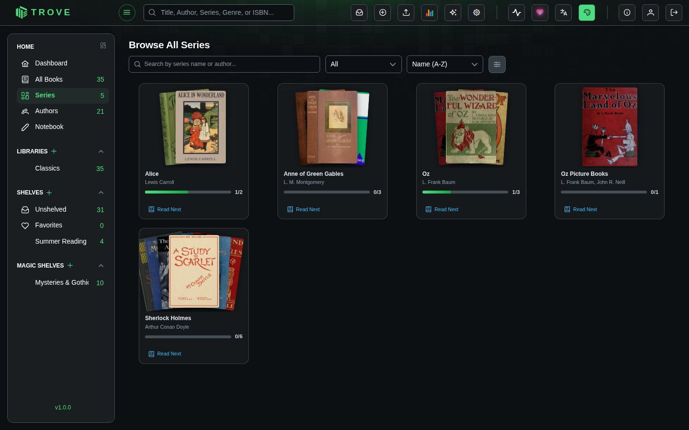

Series
The Series view lets you browse your collection organized by book series. Trove automatically groups books that share a series name into a single series entry, giving you a high-level overview of multi-book collections like trilogies, manga runs, or long-running novel series.
Browse All Series
Click Series in the sidebar to open the series browser. Each series is displayed as a card showing stacked covers, the series name, authors, a reading progress bar, and a Read Next shortcut.

Series Cards
Each card gives you a quick snapshot of a series at a glance.
| Element | Description |
|---|---|
| Stacked covers | Displays covers from up to 7 books in the series, fanned out in an overlapping layout |
| Series name | The shared series name from book metadata |
| Authors | Up to 2 author names shown, with a +N count if there are more |
| Progress bar | Visual indicator of how many books you've read (e.g., 2/4 means 2 out of 4 books read) |
| Read Next | Opens the next unread book in the series directly in the reader |
Search, Filter, and Sort
The toolbar at the top of the series browser gives you several ways to narrow down your view.
Search
Type in the search bar to filter series by name or author. The search is case-insensitive and matches partial text.
Filter by Status
Use the status dropdown to show only series matching a particular read state:
| Filter | Shows |
|---|---|
| All | Every series (default) |
| Not Started | Series where no books have been read |
| In Progress | Series where some books have been read |
| Completed | Series where all books are marked as read |
| Abandoned | Series marked as abandoned or won't read |
Sort
Use the sort dropdown to reorder the series grid:
| Sort Option | Description |
|---|---|
| Name (A-Z) | Alphabetical order (default) |
| Name (Z-A) | Reverse alphabetical |
| Book Count | Series with the most books first |
| Progress | Series closest to completion first |
| Recently Read | Series you've read most recently first |
| Recently Added | Newest series first |
Series Detail Page
Click on any series card to open its detail page. This shows the full series information along with all the books it contains.
Series header includes:
- Series title and authors (clickable to filter by author)
- Categories/genres (clickable to filter by category)
- Publisher and language
- Year range (earliest to latest publication year)
- Total book count
- Overall read status with progress (e.g., "In Progress 4/12")
- Series description (expandable if long)
Below the header, all books in the series are displayed in a grid, sorted by their series number. You can select individual books to perform bulk actions like refreshing metadata, assigning to shelves, or managing read status.
How Series Are Created
Series are built automatically from book metadata. When a book's metadata includes a series name, Trove groups it with other books sharing that same series name.
Series metadata comes from:
- Embedded metadata inside book files (EPUB, PDF, etc.)
- Online metadata providers (Goodreads, Google Books, Hardcover, etc.)
- Manual editing through the metadata editor
- Sidecar files (
.metadata.jsonnext to the books)
You don't need to manually create or manage series. Just make sure your books have a series name in their metadata, and Trove handles the rest.
Display Settings
Click the display settings icon (the sliders icon in the toolbar) to adjust the card size. A slider lets you scale cards from 0.7x to 1.3x their default size. Your preference is saved automatically and persists across sessions.
Notes
- Series are computed from your book collection in real time. Adding or removing books updates the series view automatically.
- The progress bar and read status update as you mark books as read.
- Physical books can be part of a series, just like digital books.
- Series without a name in metadata won't appear in the series browser. Use the metadata editor to add a series name if needed.